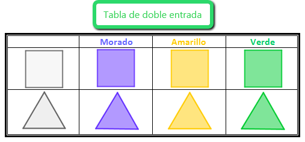
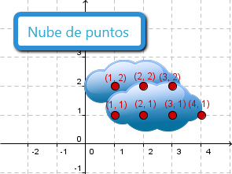

2. Organización y representación de datos
Como has visto en el apartado anterior, tan solo con unos cuantos datos ya se pueden establecer relaciones entre dos variables. Pero lo normal para obtener resultados fiables es contar con una gran cantidad de datos estadísticos. En estos casos no es cómodo hacer una tabla simple como las que hemos utilizado en los últimos ejemplos, en los que solo había seis o siete datos. Vamos a ver cómo organizar la información en una tabla de doble entrada cuando tenemos muchos pares de datos.
Por cierto, aunque en principio por tabla de doble entrada no te venga nada a la mente, si te paras un poquito a pensar en la siguiente imagen, verás como llevas años utilizándolas. Observa como interaccionan las filas con las columnas, los elementos centrales van surgiendo de combinar las colores con las figuras, obteniendo de esta forma figuras coloreadas:
|

Imagen de elaboración propia
|
Además, en este apartado verás cómo podemos resumir y representar la información que nos proporcionan estas tablas, en unos ejes de coordenados. Esta representación llamada nube de puntos, nos dará una idea de la posible dependencia que puede existir entre las dos variables que estamos estudiando.
|

Imagen de elaboración propi
|